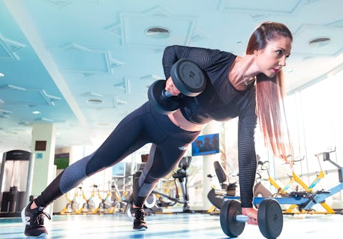
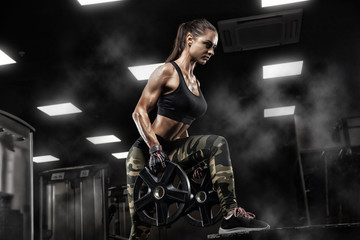

What is a bodyweight workout?
A bodyweight workout is a form of exercise that utilizes the individual's own body weight for resistance training. This type of workout focuses on movements that strengthen muscles, improve endurance, and enhance overall fitness levels without the need for additional equipment or weights. By using body weight as resistance, exercises such as push-ups, squats, and lunges effectively target various muscle groups, including the chest, arms, legs, and core.
One of the key benefits of bodyweight workouts is their accessibility. They can be performed virtually anywhere, whether at home, outdoors, or while traveling, making them highly convenient for maintaining fitness routines. This accessibility also eliminates the cost associated with gym memberships or purchasing exercise equipment, making bodyweight exercises a cost-effective option for individuals seeking to improve their fitness.
Bodyweight routines are versatile, suitable for all fitness levels. Beginners can start with simpler exercises and progress to more challenging variations as they gain strength. They enhance functional fitness, improving everyday activities and overall physical performance.
What type of training should I do to lose weight?
To lose weight effectively, incorporating a combination of cardiovascular exercises and strength training is essential. Cardiovascular training, such as running, cycling, and swimming, helps burn a significant number of calories, aiding in overall fat loss. Aim for at least 150 minutes of moderate-intensity or 75 minutes of high-intensity cardio each week, spread over several days. This will help increase your heart rate, improve cardiovascular health, and boost calorie expenditure.
Strength training is equally important for weight loss as it helps build lean muscle mass. Increased muscle mass can elevate your basal metabolic rate, meaning you’ll burn more calories even at rest. Incorporate exercises like squats, lunges, deadlifts, and push-ups into your routine. Aim for strength training sessions two to three times per week, ensuring you target different muscle groups each session.
High-Intensity Interval Training (HIIT) is another effective method for weight loss. HIIT involves alternating between short bursts of intense exercise and periods of rest or low-intensity exercise. This type of training can burn a lot of calories in a short amount of time and has been shown to improve metabolic rate even after the workout is finished. Including one or two HIIT sessions per week can enhance your weight loss efforts.
